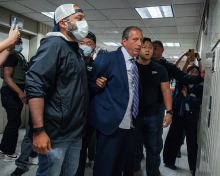
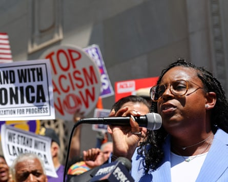

A flock of Ice agents, some masked, some sporting military-operator fashion for show, smooshed the New York City comptroller, Brad Lander, up against a wall and handcuffed him in the hallway of a federal courthouse in early June, shuffling the mild-mannered politician into an elevator like the Sandman hustling an act off the stage 10 miles north at Harlem’s Apollo Theater.
Like at the Apollo, Lander’s arrest was a show. News reporters and cellphone camera-wielding bystanders crowded the hall to watch the burly federal officers rumple a 55-year-old auditor asking for a warrant.
“I’m not obstructing. I’m standing here in this hallway asking for a judicial warrant,” Lander said. “You don’t have the authority to arrest US citizens.”
“This is an urgent moment for the rule of law in the United States of America and it is important to step up,” Lander told the Guardian after the arrest. “And I think the dividing line for Democrats right now is not between progressives and moderates. It’s between fighters and folders. We have to find nonviolent but insistent ways of standing up for democracy and the rule of law.”
The act of showing up is resonating with voters who have seen the limits of social media activism. Be it Senator Cory Booker’s speech in April or the arrest of lawmakers trying to inspect an Ice detention facility, the images of administration opponents physically interposing themselves as a disruption hearken back to an earlier era in American politics, of sit-ins and full jails, where opponents meant to grind the apparatus of government to a halt as a means of resistance.
“There’s a time when the operation of the machine becomes so odious, makes you so sick at heart, that you can’t take part,” Mario Savio, a student leader in the free speech movement, a campaign of civil disobedience against restrictive policies on student political activity, said 60 years ago during a campus protest. “You can’t even passively take part. And you’ve got to put your bodies upon the gears and upon the wheels, upon the levers, upon all the apparatus, and you’ve got to make it stop.”
That can look like Booker’s 25-hour record-breaking stand at the dais from 31 March through 1 April this year, presenting a litany of protest against the actions of the first 71 days of the Trump administration in the longest speech in Senate history. Technically, it was not a filibuster, unlike the previous record-holder, the South Carolina senator Strom Thurmond’s speech delaying passage of the Civil Rights Act in 1957.
As an act of political protest, it required presence. The rules of a Senate floor speech are exacting. No sitting. No breaks. Continuous, corporeal effort. As the spectacle grew, Booker acknowledged that Democratic voters had been demanding more of their leaders.
“I confess that I have been imperfect,” Booker said. “I confess that I’ve been inadequate to the moment. I confess that the Democratic party has made terrible mistakes that gave a lane to this demagogue. I confess we all must look in the mirror and say: ‘We will do better.’”
A ctivists had been in the street from the day of Trump’s inauguration. But Booker’s speech was a demarcation point after which Democratic leaders started confronting the right more directly. It also marked them being confronted in return.
Hannah Dugan, a Wisconsin judge, allowed a man to leave through the back doors of her courtroom, allegedly in response to the presence of immigration officers waiting to arrest him. FBI agents subsequently arrested Dugan in her Milwaukee courtroom on 25 April, charging her with obstruction.
The FBI director, Kash Patel, posted comments about her arrest on X almost immediately, and eventually posted a photograph of her arrest, handcuffed and walking toward a police cruiser, with the comment: “No one is above the law.” Digitally altered photographs of Dugan appearing to be in tears in a mugshot proliferated on social media. Trump himself reposted an image from the Libs of TikTok website of Dugan wearing a Covid-19 mask on the day of her arrest.
Three days later, Trump issued an executive order to create “a mechanism to provide legal resources and indemnification”, including “private-sector pro bono assistance”, for cops it describes as “unjustly incur[ring] expenses and liabilities for actions taken during the performance of their official duties to enforce the law”.
The order also seeks “enhanced sentences for crimes against law enforcement officers”, and calls for federal prosecution of state or local officials who the administration says obstruct law enforcement.
The New York City comptroller, Brad Lander, being placed under arrest by Ice and FBI agents outside federal immigration court on 17 June 2025, in New York.Photograph: Olga Fedorova/AP
Taken together, the order sent a clear signal to federal police agencies to take the gloves off – that accusations of misconduct would be defended against and that placing the bodies of public officials into handcuffs and squad cars was fair game.
Three days after that, Trump’s border czar, Tom Homan, suggested more arrests were on the way. “Wait till you see what’s coming,” he said in response to a question about future arrests of officials.
But the warnings have not stopped Democrats from showing up at Ice detention centers and other demonstrations.
Four more elected or appointed Democratic officials and one Democratic senator’s staffer have been detained, arrested or charged by federal agents since Trump’s executive order. Each of the arrests has become a media spectacle.
Ras Baraka, the mayor of Newark, New Jersey, visited Delaney Hall, a privately owned Ice detention facility he accuses of violating safety protocols, on 9 May. He was with three members of Congress at the time, who have the explicit right by law to inspect Ice facilities. Video captured by body-worn cameras shows a tangle of bodies as Ice agents arrest him, with beefy federal officers bending him over in handcuffs as they walk him through an outraged crowd.
Amid the scrum is the freshman representative LaMonica McIver in her red coat, who stands out in videos as she walks through the gate. She appears to bump a masked law enforcement officer as she’s caught in the chaotic scene. Her intentions are far from clear, and witness video from other angles contradicts the government’s claim that members of Congress stormed the facility.
Ten days later, the acting US attorney, Alina Habba, charged McIver with forcibly impeding and interfering with federal officers, even after dropping similar charges against Baraka. For the administration and its supporters, the high-visibility arrests play out as payback for what they see as the politically motivated prosecution of Trump and of January 6 rioters. The Republican representative Nancy Mace of South Carolina filed a House resolution to expel McIver. Baraka’s arrest and McIver’s charge became fodder for conservative media.
But it also galvanized Newark. Protesters filled the streets awaiting Baraka’s release.
“History will judge us in this moral moment,” he told the crowd. “These people are wrong. And it’s moments like this that will judge us all – as cowards or, you know, as heroes.”
Three weeks later, a staffer for the representative Jerry Nadler – whose name has not been released – allegedly impeded homeland security agents searching for “rioters” at a protest about immigration enforcement abuses. The agents handcuffed and detained her. Video circulated widely on social media and cable television.
LaMonica McIver outside federal court after pleading not guilty to three counts of ‘forcibly impeding and interfering’ with federal law enforcement, in Newark, New Jersey, on 25 June 2025.Photograph: Mike Segar/Reuters
On 8 June, as protesters flooded downtown Los Angeles intent on gumming up the streets around the Metropolitan detention center, the Democratic representative Jimmy Gomez of California posted a video on Instagram describing how chemical irritants had been deployed around the detention building. “They’re spraying something to try to get us to leave,” he said. “This is just to prevent us from doing our jobs.”
Homeland security briefly released guidance last week asking members of Congress to give Ice facilities 72 hours of prior notice before visiting a facility. The demand conflicts with federal law allowing members of Congress immediate access for inspections. The guidance is no longer posted on the DHS website.
The Democratic senator Alex Padilla of California attempted to confront the homeland security secretary, Kristi Noem, about protests in Los Angeles on 12 June. Before he could get a word in, when he approached to ask a question, Secret Service and FBI agents dragged Padilla out of the room and handcuffed him. The DHS falsely claimed that Padilla had failed to identify himself, releasing a statement describing Padilla’s inquiry as “disrespectful political theatre”.
“ The only political theater happening in Los Angeles is Trump using thousands of troops in Los Angeles as political props in response to overwhelmingly peaceful protests,” Padilla said in response.
It has only been half a year that Trump has been president, but Democrats and other critics are finding that it’s the balance of civil rights tactics with 2025 TikTok-era virality that is cutting through the noise. Paired with some of the biggest protests in American history, it seems they are only getting started.
“Authoritarians are looking to stoke fear and conflict and send a signal [that] if they are going to do this to elected officials – if they’re going to do it to white male US citizens with passports or elected officials, I think their goal is to make everyone afraid,” Lander said.
“There is a pattern here, you know, from Senator Padilla to Ras Baraka to me, and an on-the-record statement from the attorney general about … trying to quote-unquote ‘liberate’ cities from their elected officials,” he added. “So, I take them at their word.”